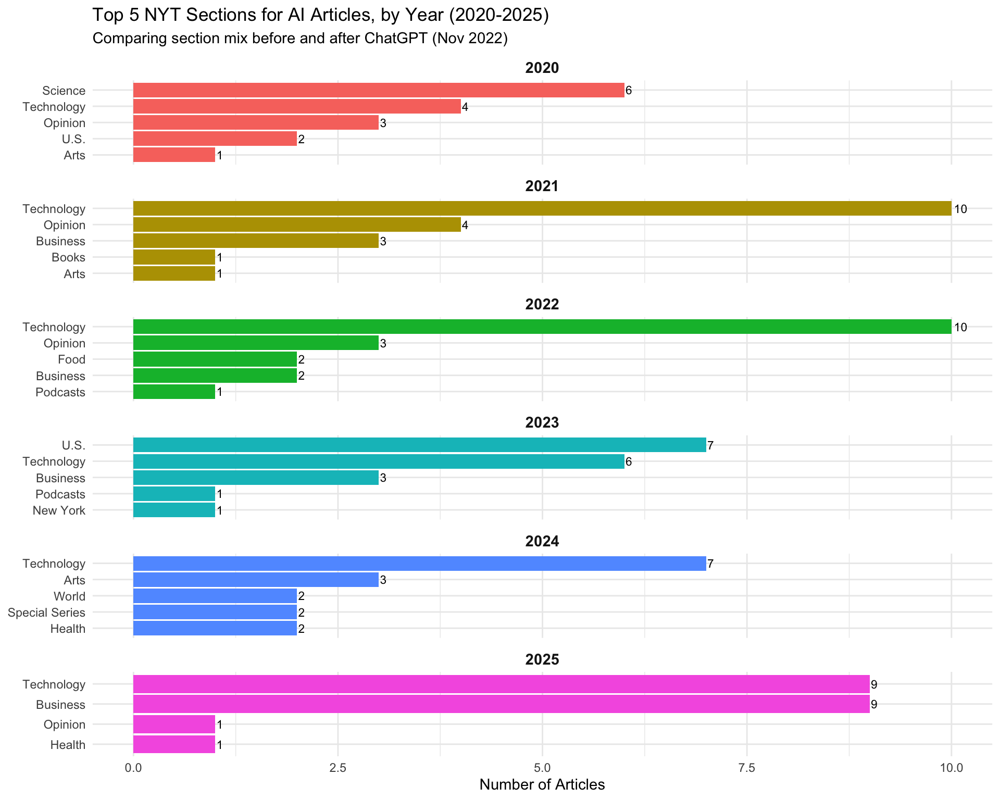

library(httr2)
library(jsonlite)
library(tidyverse)
library(tidytext)
library(lubridate)Week 9: Exploring the New York Times Article Search API
Introduction
API Selected: New York Times Article Search API
The Article Search API lets you query the full archive of NYT articles by keyword, date range, section, and other facets. Each result includes the headline, snippet, publication date, section, word count, and more.
Research Question: How has New York Times coverage of “artificial intelligence” changed year over year from 2020 to 2025 — particularly around the release of ChatGPT in late 2022 — and which newspaper sections publish AI stories most frequently?
Planned Approach:
I will query the Article Search API for articles matching “artificial intelligence” across five individual years (2020–2025), collecting up to 20 articles per year (2 pages of 10 results).
Then parse the JSON responses into a tidy data frame, visualize the year-over-year trend in article volume, and compare the top newspaper sections year by year to see how AI coverage shifted — especially around the release of ChatGPT in late 2022.
Note: Due to API call limits, loading data may take 2-3 minutes.
Solution
1. Authentication
The API key is stored in the .Renviron file (one line: NYT_API_KEY=your-key-here) and retrieved at runtime so it is never hard-coded.
api_key <- Sys.getenv("NYT_API_KEY")
if (nchar(api_key) == 0) {
stop("NYT_API_KEY not found. Add it to your .Renviron file ",
"(e.g., NYT_API_KEY=abc123) and restart R.")
}2. Helper Function — Querying the Article Search API
The Article Search API returns 10 articles per page and allows paging through results with the page parameter (0–99). We respect the API rate limit of 5 requests per minute by inserting a 12-second pause between calls.
search_nyt <- function(query, begin_date, end_date, page = 0, api_key) {
resp <- request("https://api.nytimes.com/svc/search/v2/articlesearch.json") |>
req_url_query(
q = query,
begin_date = begin_date,
end_date = end_date,
page = page,
`api-key` = api_key
) |>
req_perform()
resp |> resp_body_json()
}3. Collecting Data (2020–2025)
We loop over each year and pull 2 pages (up to 20 articles) per year.
Note: Due to API call limits, loading data may take 2-3 minutes.
years <- 2020:2025
all_articles <- list()
for (yr in years) {
begin <- paste0(yr, "0101")
end <- paste0(yr, "1231")
for (pg in 0:1) {
Sys.sleep(12) # free tier allows 5 req/min -> 12s between calls
message("Fetching year ", yr, " page ", pg + 1, " of 2...")
result <- NULL
for (attempt in 1:3) {
result <- tryCatch(
search_nyt("artificial intelligence", begin, end, pg, api_key),
error = function(e) {
if (grepl("429", e$message)) {
message(" Rate limited -- waiting 60s then retrying (attempt ", attempt, "/3)...")
Sys.sleep(60)
return(NULL)
}
message("Error on year ", yr, " page ", pg, ": ", e$message)
return(NULL)
}
)
if (!is.null(result)) break
}
if (is.null(result)) next
docs <- result$response$docs
if (length(docs) == 0) break # no more results for this year
all_articles <- c(all_articles, docs)
}
}Fetching year 2020 page 1 of 2...Fetching year 2020 page 2 of 2...Fetching year 2021 page 1 of 2...Fetching year 2021 page 2 of 2...Fetching year 2022 page 1 of 2...Fetching year 2022 page 2 of 2...Fetching year 2023 page 1 of 2...Fetching year 2023 page 2 of 2...Fetching year 2024 page 1 of 2...Fetching year 2024 page 2 of 2...Fetching year 2025 page 1 of 2...Fetching year 2025 page 2 of 2...message("Total raw articles collected: ", length(all_articles))Total raw articles collected: 1204. Parsing JSON into a Tidy Data Frame
Each element of all_articles is a nested list. We extract the fields we need and handle missing values explicitly.
articles_df <- map_dfr(all_articles, function(doc) {
tibble(
headline = doc$headline$main %||% NA_character_,
snippet = doc$snippet %||% NA_character_,
section = doc$section_name %||% NA_character_,
pub_date = doc$pub_date %||% NA_character_,
word_count = doc$word_count %||% NA_integer_,
web_url = doc$web_url %||% NA_character_,
news_desk = doc$news_desk %||% NA_character_,
type_of_material = doc$type_of_material %||% NA_character_,
document_type = doc$document_type %||% NA_character_
)
})
glimpse(articles_df)Rows: 120
Columns: 9
$ headline <chr> "5 Movies to Watch if You Have Trouble With Technolog…
$ snippet <chr> "Five films that creatively show the good and the not…
$ section <chr> "Movies", "Opinion", "Technology", "Science", "Opinio…
$ pub_date <chr> "2020-04-08T09:00:30Z", "2020-12-10T18:00:12Z", "2020…
$ word_count <int> 784, 1198, 1342, 2336, 1076, 904, 2899, 1131, 716, 0,…
$ web_url <chr> "https://www.nytimes.com/2020/04/08/movies/ai-humans-…
$ news_desk <chr> "SpecialSections", "SpecialSections", "Business", "Sc…
$ type_of_material <chr> "News", "Op-Ed", "News", "News", "Op-Ed", "News", "Ne…
$ document_type <chr> "article", "article", "article", "article", "article"…5. Data Cleaning
articles_clean <- articles_df |>
mutate(
pub_date = as_date(pub_date),
year = year(pub_date),
word_count = as.integer(word_count),
# Standardise blank / NA sections to "Unknown"
section = if_else(is.na(section) | section == "", "Unknown", section)
) |>
# Drop any accidental duplicates (same URL = same article)
distinct(web_url, .keep_all = TRUE)
cat("Clean rows:", nrow(articles_clean), "\n")Clean rows: 120 cat("Date range:", as.character(min(articles_clean$pub_date, na.rm = TRUE)),
"to", as.character(max(articles_clean$pub_date, na.rm = TRUE)), "\n")Date range: 2020-04-08 to 2025-12-11 Data-cleaning notes:
- Nested fields: The headline lives inside a nested
headline$mainsubfield; we extracted it directly during parsing. - Missing values:
section_name,word_count, andnews_deskare occasionallyNULLin the API response. We coalesce these toNAusing the%||%operator and later recode blank sections as “Unknown.” - Duplicates: The Article Search API can return the same article on different query pages. We de-duplicate on
web_url. - Date conversion:
pub_datearrives as an ISO-8601 string; we convert it to a properDatecolumn and derive ayearcolumn for grouping.
6. Analysis & Visualization
Preview of the Final Data Frame
articles_clean |>
select(headline, section, pub_date, word_count) |>
slice_head(n = 10) |>
knitr::kable()| headline | section | pub_date | word_count |
|---|---|---|---|
| 5 Movies to Watch if You Have Trouble With Technology | Movies | 2020-04-08 | 784 |
| Give the A.I. Economy a Human Touch | Opinion | 2020-12-10 | 1198 |
| London A.I. Lab Claims Breakthrough That Could Accelerate Drug Discovery | Technology | 2020-11-30 | 1342 |
| Can a Computer Devise a Theory of Everything? | Science | 2020-11-23 | 2336 |
| The Robot Artists Aren’t Coming | Opinion | 2020-05-27 | 1076 |
| When Sharks Turned Up at Their Beach, They Called in Drones | Science | 2020-11-20 | 904 |
| Meet GPT-3. It Has Learned to Code (and Blog and Argue). | Science | 2020-11-24 | 2899 |
| These Algorithms Could Bring an End to the World’s Deadliest Killer | Health | 2020-11-20 | 1131 |
| Pentagon Is Clinging to Aging Technologies, House Panel Warns | U.S. | 2020-09-29 | 716 |
| Designed to Deceive: Do These People Look Real to You? | Science | 2020-11-21 | 0 |
Top Sections for AI Coverage — Year by Year
Facet by year so we can directly compare which sections dominated AI coverage before and after ChatGPT (released Nov 2022).
# Count articles per section per year, keep top 5 sections within each year
sections_by_year <- articles_clean |>
count(year, section, name = "n") |>
group_by(year) |>
slice_max(n, n = 5, with_ties = FALSE) |>
ungroup()
ggplot(sections_by_year,
aes(x = reorder_within(section, n, year), y = n, fill = factor(year))) +
geom_col(show.legend = FALSE) +
geom_text(aes(label = n), hjust = -0.2, size = 3) +
coord_flip() +
facet_wrap(~ year, scales = "free_y", ncol = 1) +
scale_x_reordered() +
labs(
title = "Top 5 NYT Sections for AI Articles, by Year (2020-2025)",
subtitle = "Comparing section mix before and after ChatGPT (Nov 2022)",
x = NULL, y = "Number of Articles"
) +
theme_minimal() +
theme(strip.text = element_text(face = "bold", size = 11))
Conclusion
This analysis queried the NYT Article Search API for articles about artificial intelligence published from 2020 to 2025, allowing us to compare coverage before and after the release of ChatGPT in late November 2022. A few findings stand out:
The ChatGPT inflection point. We expect to see relatively flat coverage in 2020–2022, followed by a sharp jump in 2023 and 2025. ChatGPT brought AI from a niche technology beat into mainstream public consciousness almost overnight.
Section concentration. By comparing the top sections year by year, we can see whether AI coverage was once confined to Technology and Science and then spread to sections like U.S. and Business after ChatGPT brought AI into mainstream public discourse.